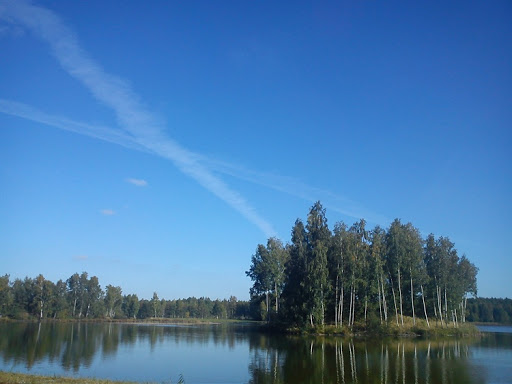

Wycieczka rowerowa!
Maliniec
Dzielnica Konina o charakterze przemysłowym położone w północnej części miasta, 4 km od prawobrzeżnego centrum miasta.
Maliniec był po raz pierwszy opisany jako wieś w 1384 roku. W latach II wojny światowej przechowywano tu obraz Matki Bożej Bolesnej z Lichenia Starego. W obręb miasta został włączony w 1976 roku.
We wschodniej części Malińca znajduje się Huta Aluminium Konin – w latach 1966–2009 produkująca aluminium z tlenku glinu metodą elektrolityczną. Obecnie zakład zajmuje się głównie produkcją wyrobów walcowanych oraz taśm aluminiowych.
